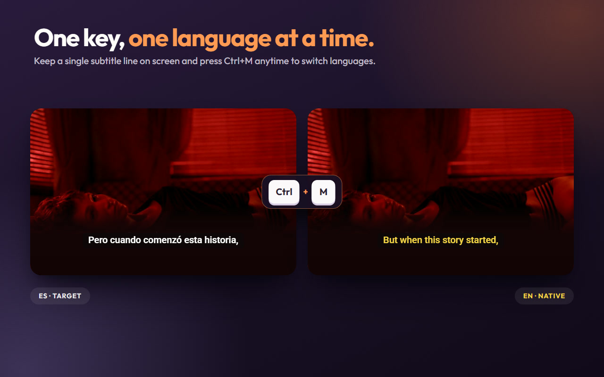

Both lines change togetherİki satır birlikte değişir
Two subtitle files rarely split a sentence at the same moment, so one line jumps while the other lingers. Looptions times the second line to the first.
İki altyazı dosyası cümleyi nadiren aynı yerden böler; biri atlarken öteki geride kalır. Looptions ikinci satırı birincinin zamanlamasına bağlar.
For a quieter screen, show one language and press Ctrl+M to peek at the other.
Daha sade bir ekran için tek dil göster, ötekine bakmak istediğinde Ctrl+M'ye bas.
